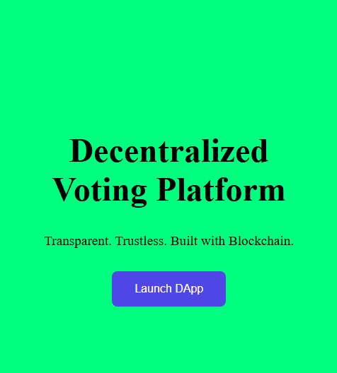

Blockchain Voting for Agricultural Cooperatives — Transparent, Tamper-Proof Elections
This decentralized application enables cooperatives to manage transparent voting on leadership, finances, and critical decisions. It leverages Ethereum smart contracts to ensure each vote is verifiable, anonymous, and immutable.
I handled the fullstack development — from writing Solidity contracts to building the frontend interface, integrating wallet connection, and implementing vote charts. This project demonstrates a complete dApp lifecycle including UI/UX, governance logic, and on-chain analytics.